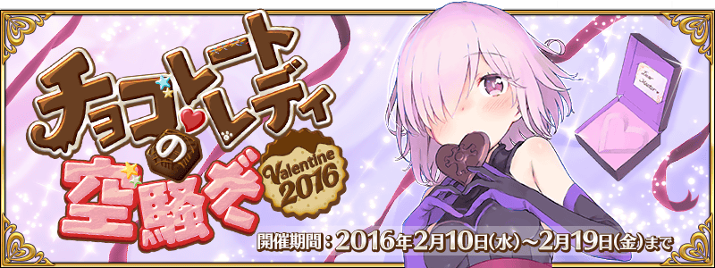
◆活動舉辦期間◆
2016年2月10日（三）18：00～2月19日（五）22：59
◆活動概要◆
說到2月14日就會想到情人節！
因此，舉辦期間限定活動「巧克力・女士的大驚小怪 Valentine2016」！
Servant們似乎照各自的心意準備了特製巧克力，想告訴各位Master什麼事。
挑戰出現在迦爾帝亞之門的任務，收集特別道具，從中意的Servant領取特製巧克力吧！
※能領取巧克力的對象，僅限有入手履歷的Servant。
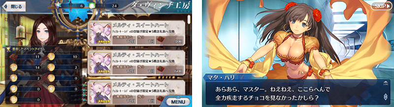
-
- 主線任務
| 開幕 大脱走チョコレート味 | |||||
|---|---|---|---|---|---|
| 消耗AP | 推薦Lv. | 初次報酬 | 開放條件 | ||
| 5 | 10 | 聖晶石 | 2/10 13:00~2/19 22:59 | ||
| (1/1) | 職階傾向 | QP | Exp | 絆 | |
| 1,400 | 275 | 115 | |||
| Wave 1 |
| ||||
| 掉落物 | 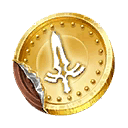x2 x2 | ||||
| 第一節 チョコレートは圧制なり | |||||
|---|---|---|---|---|---|
| 消耗AP | 推薦Lv. | 初次報酬 | 開放條件 | ||
| 5 | 15 | 涙のバレンタイン道場 | 2/10 13:00~2/19 22:59 通過 開幕 大脱走チョコレート味 | ||
| (1/3) | 職階傾向 | QP | Exp | 絆 | |
| 1,900 | 550 | 165 | |||
| Wave 1 |
| ||||
| 掉落物 |
| ||||
| (2/3) | 職階傾向 | QP | Exp | 絆 | |
| 1,900 | 550 | 165 | |||
| Wave 1 |
| ||||
| Wave 2 |
| ||||
| Wave 3 |
| ||||
| 掉落物 | x2 x2 x5 | ||||
| (3/3) | 職階傾向 | QP | Exp | 絆 | |
| 1,900 | 550 | 165 | |||
| Wave 1 |
| ||||
| Wave 2 |
| ||||
| 掉落物 |
| ||||
| 第二節 母と女難とチョコレート | |||||
|---|---|---|---|---|---|
| 消耗AP | 推薦Lv. | 初次報酬 | 開放條件 | ||
| 5 | 20 | 聖晶石 | 2/10 23:00~2/19 22:59 通過 第一節 チョコレートは圧制なり | ||
| (1/2) | 職階傾向 | QP | Exp | 絆 | |
| 2,400 | 955 | 215 | |||
| Wave 1 |
| ||||
| Wave 2 |
| ||||
| 掉落物 |
| ||||
| (2/2) | 職階傾向 | QP | Exp | 絆 | |
| 2,400 | 955 | 215 | |||
| Wave 1 |
| ||||
| 掉落物 |
| ||||
| 第三節 それも私です | |||||
|---|---|---|---|---|---|
| 消耗AP | 推薦Lv. | 初次報酬 | 開放條件 | ||
| 5 | 22 | 聖晶石 | 2/11 23:00~2/19 22:59 通過 第二節 母と女難とチョコレート | ||
| (1/1) | 職階傾向 | QP | Exp | 絆 | |
| 2,600 | 1,120 | 235 | |||
| Wave 1 |
チョコレイトホムンクルス Lv17 HP6,778 チョコレイトホムンクルス Lv17 HP6,778 チョコレイトホムンクルス Lv17 HP6,778 チョコレイトホムンクルス Lv17 HP6,778 チョコレイトホムンクルス Lv17 HP6,778 チョコレイトホムンクルス Lv17 HP6,778 | ||||
| 掉落物 | 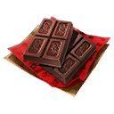x2 x3 | ||||
| 第四節 悪魔のように黒く、甘く | |||||
|---|---|---|---|---|---|
| 消耗AP | 推薦Lv. | 初次報酬 | 開放條件 | ||
| 5 | 24 | 聖晶石 | 2/12 23:00~2/19 22:59 通過 第三節 それも私です | ||
| (1/1) | 職階傾向 | QP | Exp | 絆 | |
| 2,800 | 1,300 | 255 | |||
| Wave 1 |
| ||||
| Wave 2 |
チョコサーヴァント Lv20 HP10,854 | ||||
| Wave 3 |
| ||||
| 掉落物 | x2 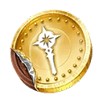x2 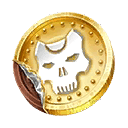x2 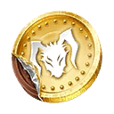x2 x4 | ||||
| チョコが陽だまりで溶けぬ間に | |||||
|---|---|---|---|---|---|
| 消耗AP | 推薦Lv. | 初次報酬 | 開放條件 | ||
| 5 | 15 | カルデアスタンダード | 2/14 3:00~2/19 22:59 通過 開幕 大脱走チョコレート味 入手 マシュからの手紙 | ||
| (1/3) | 職階傾向 | QP | Exp | 絆 | |
| 1,900 | 550 | 165 | |||
| Wave 1 |
| ||||
| 掉落物 |
| ||||
| (2/3) | 職階傾向 | QP | Exp | 絆 | |
| 1,900 | 550 | 165 | |||
| Wave 1 |
| ||||
| 掉落物 |
| ||||
| (3/3) | 職階傾向 | QP | Exp | 絆 | |
| 1,900 | 550 | 165 | |||
| Wave 1 |
| ||||
| 掉落物 |
| ||||
-
- 收集巧克力＜劍・弓・槍篇＞
| コインチョコ集め＜剣・弓・槍編＞ 初級 | |||||
|---|---|---|---|---|---|
| 消耗AP | 推薦Lv. | 初次報酬 | 開放條件 | ||
| 20 | 20 | 黄金の果実 | 2/10 13:00~2/19 22:59 通過 開幕 大脱走チョコレート味 | ||
| (1/1) | 職階傾向 | QP | Exp | 絆 | |
| 2,400 | 955 | 215 | |||
| 掉落物 |
各x2 | ||||
| コインチョコ集め＜剣・弓・槍編＞ 中級 | |||||
|---|---|---|---|---|---|
| 消耗AP | 推薦Lv. | 初次報酬 | 開放條件 | ||
| 25 | 30 | 黄金の果実 | 2/10 13:00~2/19 22:59 通過 開幕 大脱走チョコレート味 通過 コインチョコ集め＜剣・弓・槍編＞ 初級 | ||
| (1/1) | 職階傾向 | QP | Exp | 絆 | |
| 3,400 | 2,190 | 315 | |||
| 掉落物 |
各x2
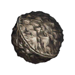 | ||||
| コインチョコ集め＜剣・弓・槍編＞ 上級 | |||||
|---|---|---|---|---|---|
| 消耗AP | 推薦Lv. | 初次報酬 | 開放條件 | ||
| 30 | 40 | 黄金の果実 | 2/10 13:00~2/19 22:59 通過 開幕 大脱走チョコレート味 通過 コインチョコ集め＜剣・弓・槍編＞ 中級 | ||
| (1/1) | 職階傾向 | QP | Exp | 絆 | |
| 4,400 | 5,690 | 415 | |||
| 掉落物 |
各x2
| ||||
| コインチョコ集め＜剣・弓・槍編＞ 超級 | |||||
|---|---|---|---|---|---|
| 消耗AP | 推薦Lv. | 初次報酬 | 開放條件 | ||
| 35 | 50 | 黄金の果実 | 2/10 13:00~2/19 22:59 通過 開幕 大脱走チョコレート味 通過 コインチョコ集め＜剣・弓・槍編＞ 上級 | ||
| (1/1) | 職階傾向 | QP | Exp | 絆 | |
| 5,400 | 10,190 | 515 | |||
| 掉落物 |
各x2
| ||||
| コインチョコ集め＜剣・弓・槍編＞ ビター級 | |||||
|---|---|---|---|---|---|
| 消耗AP | 推薦Lv. | 初次報酬 | 開放條件 | ||
| 40 | 80 | 黄金の果実 | 2/10 13:00~2/19 22:59 通過 開幕 大脱走チョコレート味 通過 コインチョコ集め＜剣・弓・槍編＞ 超級 | ||
| (1/1) | 職階傾向 | QP | Exp | 絆 | |
| 8,400 | 29,690 | 815 | |||
| 掉落物 |
各x2
| ||||
-
- 收集巧克力＜騎・術・殺・狂篇＞
| コインチョコ集め＜騎・術・殺・狂編＞ 初級 | |||||
|---|---|---|---|---|---|
| 消耗AP | 推薦Lv. | 初次報酬 | 開放條件 | ||
| 20 | 20 | 黄金の果実 | 2/10 13:00~2/19 22:59 通過 開幕 大脱走チョコレート味 | ||
| (1/1) | 職階傾向 | QP | Exp | 絆 | |
| 2,400 | 955 | 215 | |||
| 掉落物 |
各x2 | ||||
| コインチョコ集め＜騎・術・殺・狂編＞ 中級 | |||||
|---|---|---|---|---|---|
| 消耗AP | 推薦Lv. | 初次報酬 | 開放條件 | ||
| 25 | 30 | 黄金の果実 | 2/10 13:00~2/19 22:59 通過 開幕 大脱走チョコレート味 通過 コインチョコ集め＜騎・術・殺・狂編＞ 初級 | ||
| (1/1) | 職階傾向 | QP | Exp | 絆 | |
| 3,400 | 2,190 | 315 | |||
| 掉落物 |
各x2
| ||||
| コインチョコ集め＜騎・術・殺・狂編＞ 上級 | |||||
|---|---|---|---|---|---|
| 消耗AP | 推薦Lv. | 初次報酬 | 開放條件 | ||
| 30 | 40 | 黄金の果実 | 2/10 13:00~2/19 22:59 通過 開幕 大脱走チョコレート味 通過 コインチョコ集め＜騎・術・殺・狂編＞ 中級 | ||
| (1/1) | 職階傾向 | QP | Exp | 絆 | |
| 4,400 | 5,690 | 415 | |||
| 掉落物 |
各x2
| ||||
| コインチョコ集め＜騎・術・殺・狂編＞ 超級 | |||||
|---|---|---|---|---|---|
| 消耗AP | 推薦Lv. | 初次報酬 | 開放條件 | ||
| 35 | 50 | 黄金の果実 | 2/10 13:00~2/19 22:59 通過 開幕 大脱走チョコレート味 通過 コインチョコ集め＜騎・術・殺・狂編＞ 上級 | ||
| (1/1) | 職階傾向 | QP | Exp | 絆 | |
| 5,400 | 10,190 | 515 | |||
| 掉落物 |
各x2
| ||||
| コインチョコ集め＜騎・術・殺・狂編＞ ビター級 | |||||
|---|---|---|---|---|---|
| 消耗AP | 推薦Lv. | 初次報酬 | 開放條件 | ||
| 40 | 80 | 黄金の果実 | 2/10 13:00~2/19 22:59 通過 開幕 大脱走チョコレート味 通過 コインチョコ集め＜騎・術・殺・狂編＞ 超級 | ||
| (1/1) | 職階傾向 | QP | Exp | 絆 | |
| 8,400 | 29,690 | 815 | |||
| 掉落物 |
各x2
| ||||
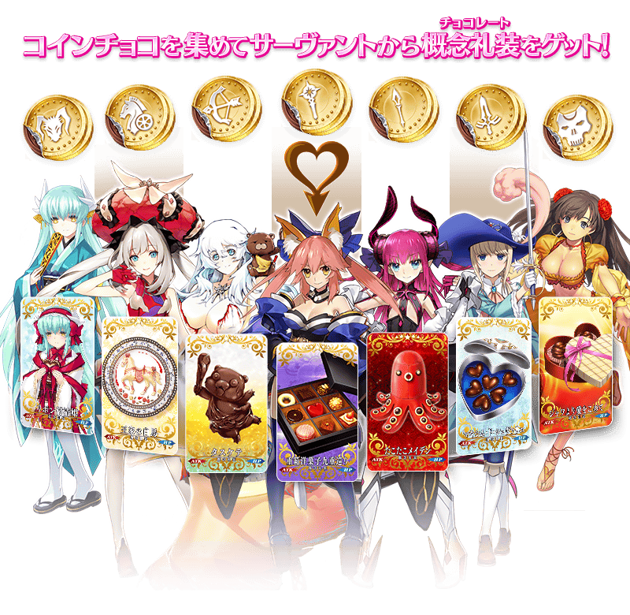
◆交換方法◆
在達文西工房內的「活動道具交換」中，使用活動專用道具「職階別硬幣巧克力」，就能交換活動限定概念禮裝「來自各Servant的巧克力」。
◆交換方法◆
交換期間：2/24（三）12：59
※交換期間結束後，職階別硬幣巧克力、材料巧克力會消失。
◆交換對象◆
| 職階 | 稀有度 | Servant |
|---|---|---|
| Saber | ★★★★★ | 阿爾托莉亞・潘德拉剛 |
| ★★★★★ | 阿提拉 | |
| ★★★★★ | 沖田總司 | |
| ★★★★★ | 莫德雷德 | |
| ★★★★★ | 尼祿・克勞狄烏斯〔Bride〕 | |
| ★★★★ | 阿爾托莉亞・潘德拉剛〔Alter〕 | |
| ★★★★ | 阿爾托莉亞・潘德拉剛〔Lily〕 | |
| ★★★★ | 尼祿・克勞狄烏斯 | |
| ★★★★ | 夏爾・德翁 | |
| Archer | ★★★★★ | 俄里翁 |
| ★★★★ | 阿塔蘭塔 | |
| ★★★★ | 織田信長 | |
| ★★★ | 尤瑞艾莉 | |
| Lancer | ★★★★★ | 斯卡哈 |
| ★★★★★ | 布倫希爾德 | |
| ★★★★ | 伊莉莎白・巴托里 | |
| ★★★★ | 阿爾托莉亞・潘德拉剛〔Alter〕 | |
| Rider | ★★★★★ | 弗朗西斯・德雷克 |
| ★★★★ | 瑪莉・安東尼 | |
| ★★★★ | 瑪爾大 | |
| ★★★★ | 安妮・伯妮＆瑪莉・瑞德 | |
| ★★★★ | 阿爾托莉亞・潘德拉剛〔聖誕Alter〕 | |
| ★★★ | 美杜莎 | |
| ★★★ | 布狄卡 | |
| ★★★ | 牛若丸 | |
| Caster | ★★★★★ | 玉藻前 |
| ★★★★ | 伊莉莎白・巴托里〔萬聖節〕 | |
| ★★★★ | 美狄亞〔Lily〕 | |
| ★★★★ | 童謠 | |
| ★★★ | 美狄亞 | |
| Assassin | ★★★★★ | 開膛手傑克 |
| ★★★★★ | 謎之女主角X | |
| ★★★★ | 絲西娜 | |
| ★★★★ | 卡米拉 | |
| ★★★ | 荊軻 | |
| ★ | 瑪塔・哈里 | |
| Berserker | ★★★★ | 玉藻貓 |
| ★★★★ | 弗蘭肯斯坦 | |
| ★★★ | 清姬 | |
| Ruler | ★★★★★ | 貞德 |
※能領取巧克力的對象，僅限有入手履歷的Servant。
※關於沒入手履歷Servant的活動限定概念禮裝，不會顯示在活動道具交換的清單。
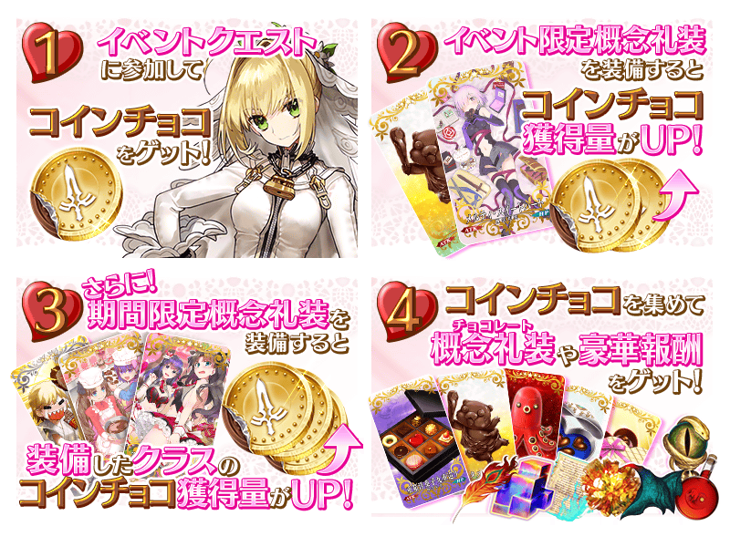
◆超值攻略方法◆
裝備活動限定概念禮裝和期間限定概念禮裝的話，活動專用道具「材料巧克力」「硬幣巧克力」的獲得數就會增加。
※請注意在各任務的道具掉落率並非100%。
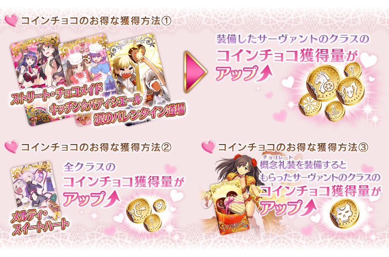
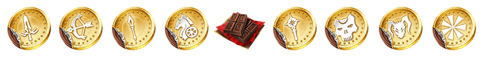
◆活動限定概念禮裝◆
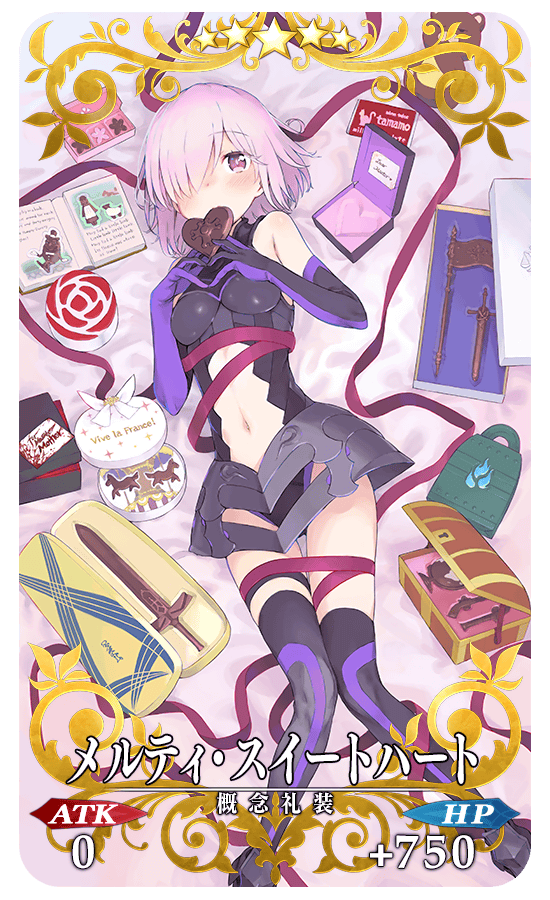
★★★★★SSR
メルティ・スイートハート
ATK 0 HP 750（最大：3000）
技能
自身的對〔男性〕防禦力提升100%(3次)＆星星發生提升10% ＋ 所有職階的硬幣巧克力的掉落獲得數增加2個【『巧克力・女士的大驚小怪』活動期間限定】

◆用材料巧克力能獲得的道具◆
| 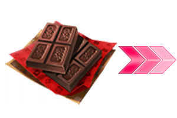 |
【活動限定概念禮裝】 【各種卡片】 【靈基再臨素材】 【其它道具】 |
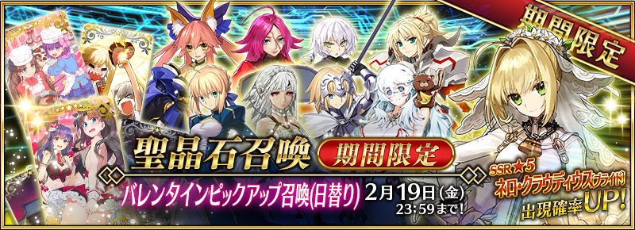
◆情人節Pick Up召喚期間◆
期間：2016年2月10日（三）18：00～2月19日（五）22：59
以期間限定舉辦情人節Pick Up召喚！
初登場的Servant「★5（SSR）尼祿・克勞狄烏斯〔Bride〕」以期間限定登場！
然而這次，在情人節Pick Up中，只會召喚到女性的Servant。另外還有，每日交替Pick Up的★5(SSR)女性Servant！詳情請在召喚左下的召喚詳細確認。
※尼祿・克勞狄烏斯〔Bride〕在Pick Up召喚期間結束後，不會追加到故事召喚。
並且，裝備期間限定概念禮裝「★5（SSR）ストリート・チョコメイド」、「★4（SR）キッチン☆パティシエール」、「★3（R）涙のバレンタイン道場」的話，活動專用道具的獲得數也會提升。
在Pick Up期間中，期間限定Servant、期間限定概念禮裝的出現機率提升！
10次召喚★4(SR)以上1枚確定和★3(R)以上的Servant1位確定！
※★4(SR)以上確定包含Servant和概念禮裝。
| Pick Up日 | 每日交替Pick Up的Servant |
|---|---|
| 2月10日（三）18：00～ |
尼祿・克勞狄烏斯〔Bride〕 |
| 2月10日（三）23：00～2月11日（四）22：59 | 尼祿・克勞狄烏斯〔Bride〕、阿爾托莉亞・潘德拉剛 |
| 2月11日（四）23：00～2月12日（五）22：59 | 尼祿・克勞狄烏斯〔Bride〕、阿提拉 |
| 2月12日（五）23：00～2月13日（六）22：59 | 尼祿・克勞狄烏斯〔Bride〕、貞德 |
| 2月13日（六）23：00～2月14日（日）22：59 | 尼祿・克勞狄烏斯〔Bride〕、俄里翁 |
| 2月14日（日）23：00～2月15日（一）22：59 | 尼祿・克勞狄烏斯〔Bride〕、玉藻前 |
| 2月15日（一）23：00～2月16日（二）22：59 | 尼祿・克勞狄烏斯〔Bride〕、弗朗西斯・德雷克 |
| 2月16日（二）23：00～2月17日（三）22：59 | 尼祿・克勞狄烏斯〔Bride〕、開膛手傑克 |
| 2月17日（三）23：00～2月18日（四）22：59 | 尼祿・克勞狄烏斯〔Bride〕、莫德雷德 |
| 2月18日（四）23：00～2月19日（五）22：59 | 尼祿・克勞狄烏斯〔Bride〕 |
※請注意每天交替Pick Up的Servant會變更。
※關於其他的Servant・概念禮裝，請在召喚左下的「召喚詳細」確認。
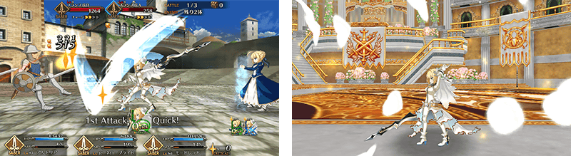
※圖片僅供參考。
迎接初登場Servant「★5（SSR）尼祿・克勞狄烏斯〔Bride〕」做為支援成員，挑戰期間限定的任務！
別錯過體驗尼祿・克勞狄烏斯〔Bride〕的技能和寶具的機會！
※任務只有戰鬥。沒有冒險部分。
◆尼祿・克勞狄烏斯〔Bride〕體驗任務舉辦期間◆
期間：2016年2月10日（三）18:00～2月19日（五）22:59
◆任務通過報酬◆
呼符
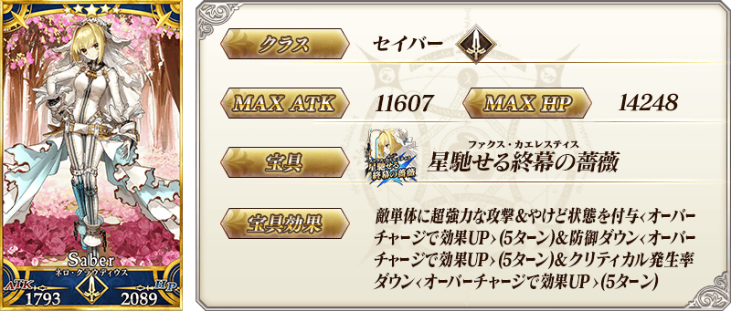
※在尼祿・克勞狄烏斯〔Bride〕的絆等級5達成開放的語音，預定會在活動結束之後的更新追加。
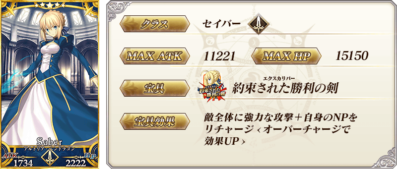
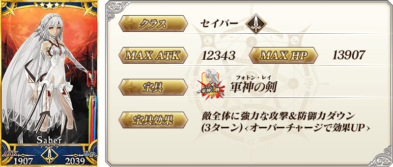
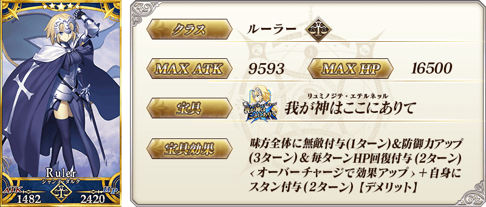
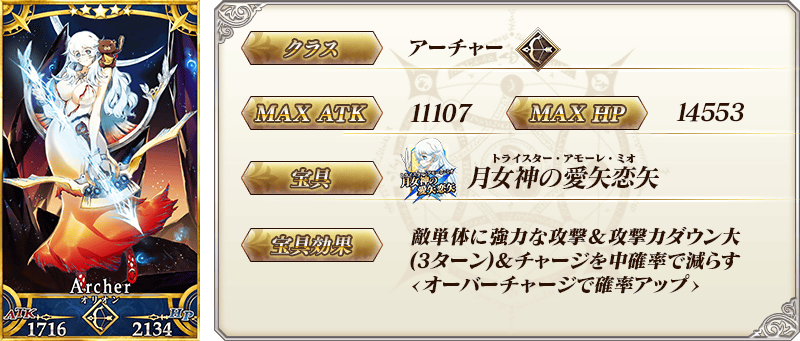
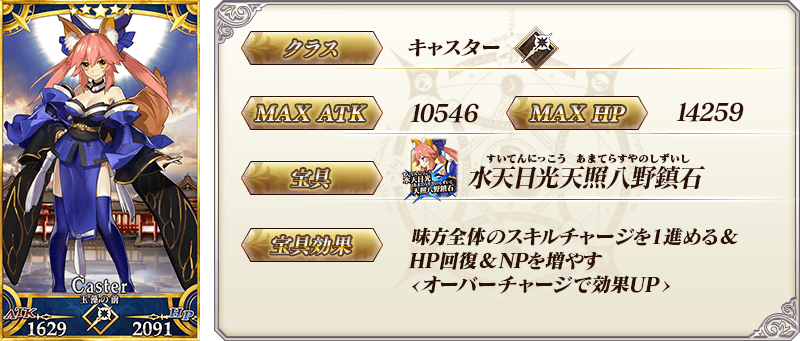

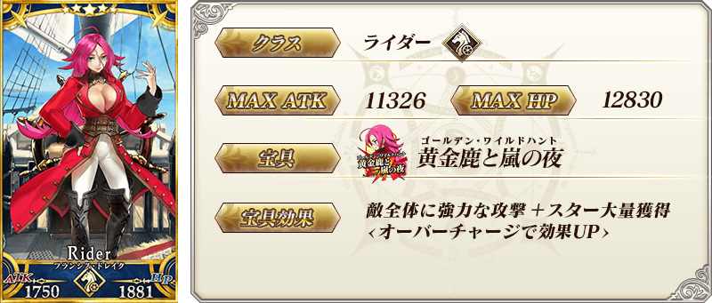
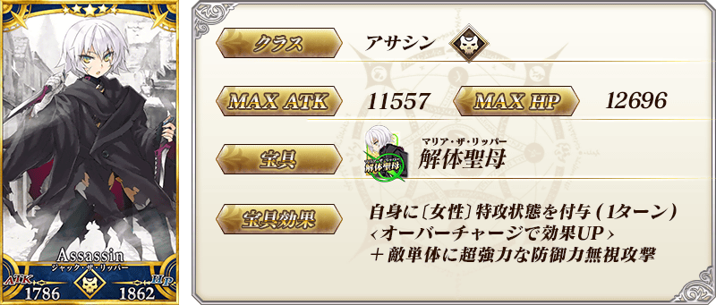

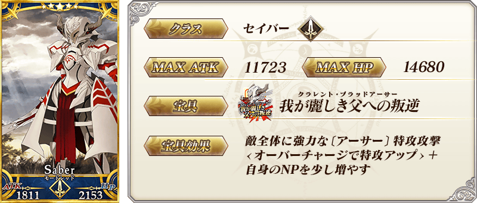
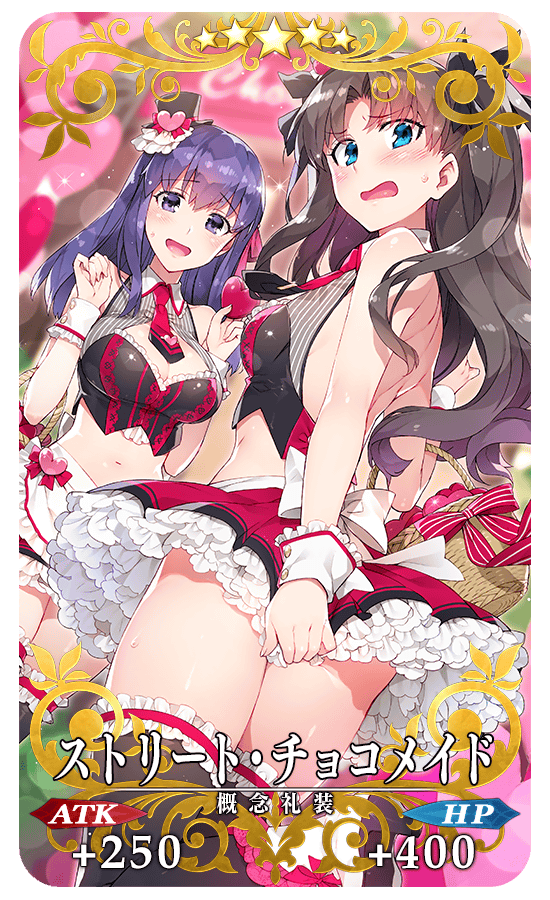
★★★★★SSR
ストリート・チョコメイド
ATK 250（最大：1000） HP 400（最大：1600）
技能
自身的Arts卡性能提升10%＆Quick卡性能提升10%＆HP回復量提升20% ＋ 與裝備Servant的職階相同的硬幣巧克力的掉落獲得數增加5個【『巧克力・女士的大驚小怪』活動期間限定】
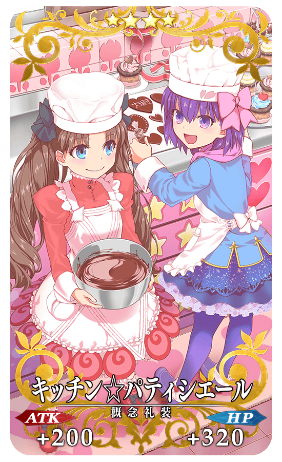
★★★★SR
キッチン☆パティシエール
ATK 200（最大：750） HP 320（最大：1200）
技能
自身的星星發生率提升15%＆NP獲得量提升15% ＋ 與裝備Servant的職階相同的硬幣巧克力的掉落獲得數增加3個【『巧克力・女士的大驚小怪』活動期間限定】
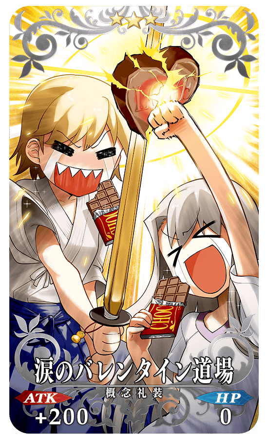
★★★R
涙のバレンタイン道場
ATK 200（最大：1000） HP 0
技能
對自身賦予必中狀態＆賦予每回合NP3%獲得狀態＆魅惑耐性降低10%【副作用】 ＋ 與裝備Servant的職階相同的硬幣巧克力的掉落獲得數增加1個【『巧克力・女士的大驚小怪』活動期間限定】
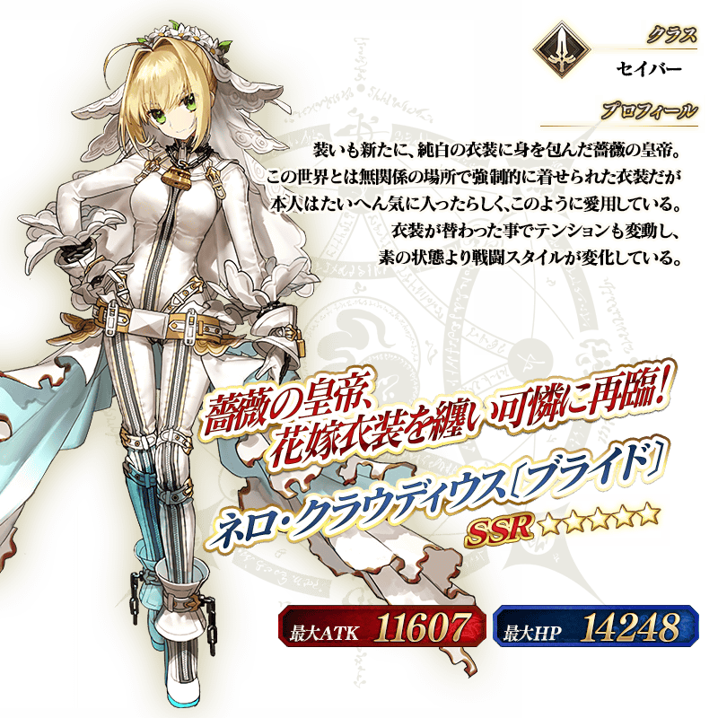
※在尼祿・克勞狄烏斯〔Bride〕的絆等級5達成開放的語音，預定會在活動結束之後的更新追加。